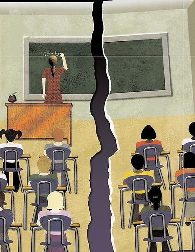

El abandono escolar ocurre por diversas razones. Una de las principales es la falta de recursos económicos, lo que obliga a muchos estudiantes a dejar la escuela para trabajar.
También influye la falta de motivación, cuando los alumnos no encuentran interés en lo que estudian o sienten que no pueden lograrlo.
Las situaciones familiares, como conflictos o falta de apoyo, pueden afectar el rendimiento y provocar que el estudiante abandone sus estudios.
